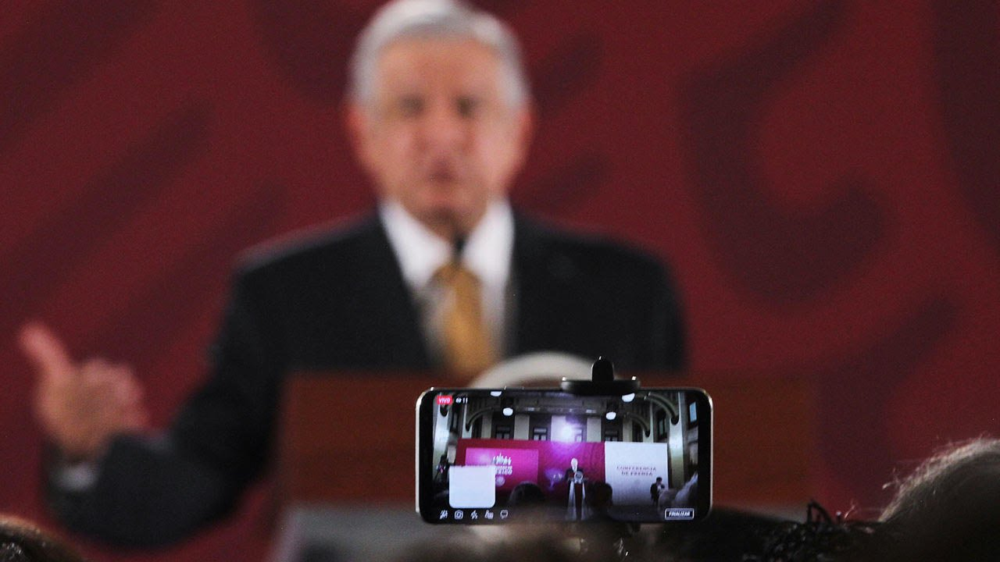

El impacto que han tenido las redes sociales en la Sociedad
La tecnología de la información y la comunicación ha cambiado rápidamente en los últimos 20 años con un desarrollo clave como la aparición de las redes sociales.
El ritmo del cambio se está acelerando. Por ejemplo, el desarrollo de la tecnología móvil ha jugado un papel importante en la configuración del impacto de las redes sociales. En todo el mundo, los dispositivos móviles dominan en términos de minutos totales pasadosen línea. Esto pone los medios para conectarse en cualquier lugar, en cualquier momento en cualquier dispositivo en manos de todos.
Por qué las personas comparten información
Un estudio fascinante realizado por el Consumer Insight Group del New York Times reveló las motivaciones que los participantes citaron para compartir información en las redes sociales. Estos incluyen un deseo de revelar contenido valioso y entretenido a otros; definirse a sí mismos; para crecer y nutrir las relaciones y para correr la voz sobre las marcas y las causas que les gustan o apoyan.
Estos factores han provocado que las redes sociales pasen de ser un medio útil para mantenerse en contacto con amigos y familiares a ser utilizadas de manera que tengan un impacto real en la sociedad.
Las redes sociales se están utilizando de formas que dan forma a la política, los negocios, la cultura mundial, la educación, las carreras, la innovación y más.
El efecto de las redes sociales en la política

Un nuevo estudio de Pew Research afirma que el 62 por ciento de las personas recibe sus noticias de las redes sociales, y el 18 por ciento lo hace con mucha frecuencia.
En comparación con otros medios, la influencia de las redes sociales en las campañas políticas ha aumentado enormemente. Las redes sociales desempeñan un papel cada vez más importante en la política electoral.
El New York Times informa que «La elección de Donald J. Trump es quizás la mejor ilustración de que en todo el planeta, las redes sociales están ayudando fundamentalmente a reconectar a la sociedad humana«. Debido a que las redes sociales permiten que las personas se comuniquen entre sí más libremente, están ayudando a crear sorpresivamente organizaciones sociales influyentes entre grupos que alguna vez fueron marginados.
El impacto de las redes sociales en el comercio
El auge de las redes sociales significa que es inusual encontrar una organización que no llegue a sus clientes a través de una plataforma de redes sociales u otra. Las empresas ven la importancia de utilizar las redes sociales para conectarse con los clientes y generar ingresos.
Las empresas se han dado cuenta de que pueden usar las redes sociales para generar ideas, estimular la demanda y crear ofertas de productos específicos.
Muchos estudios sugieren que la implementación de redes sociales en el lugar de trabajo puede fortalecer el intercambio de conocimientos. El resultado es mejorar las actividades de gestión de proyectos y permitir la difusión de conocimientos especializados. La implementación completa de las tecnologías sociales en el lugar de trabajo elimina los límites y puede aumentar la interacción y ayudar a crear trabajadores más altamente calificados y conocedores.